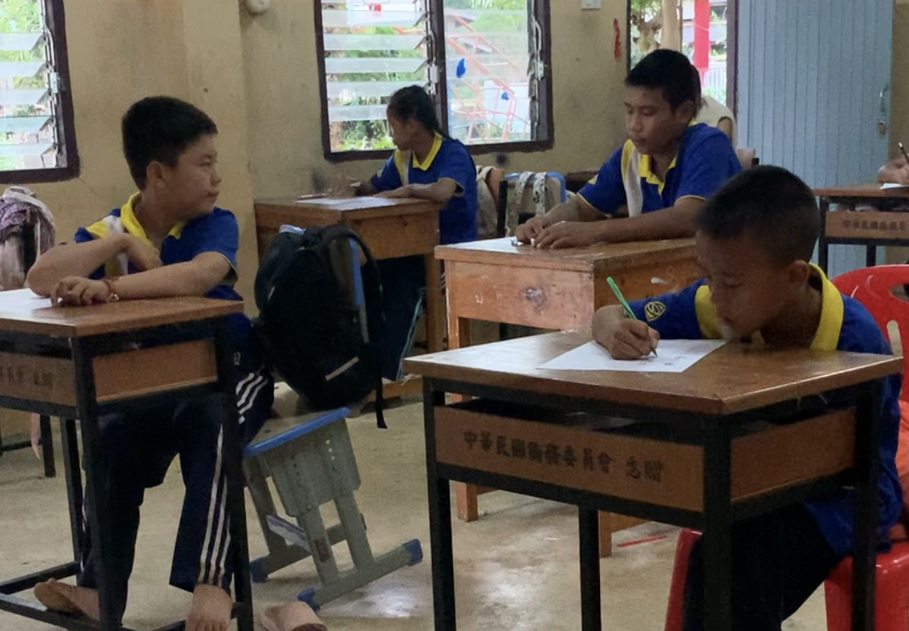
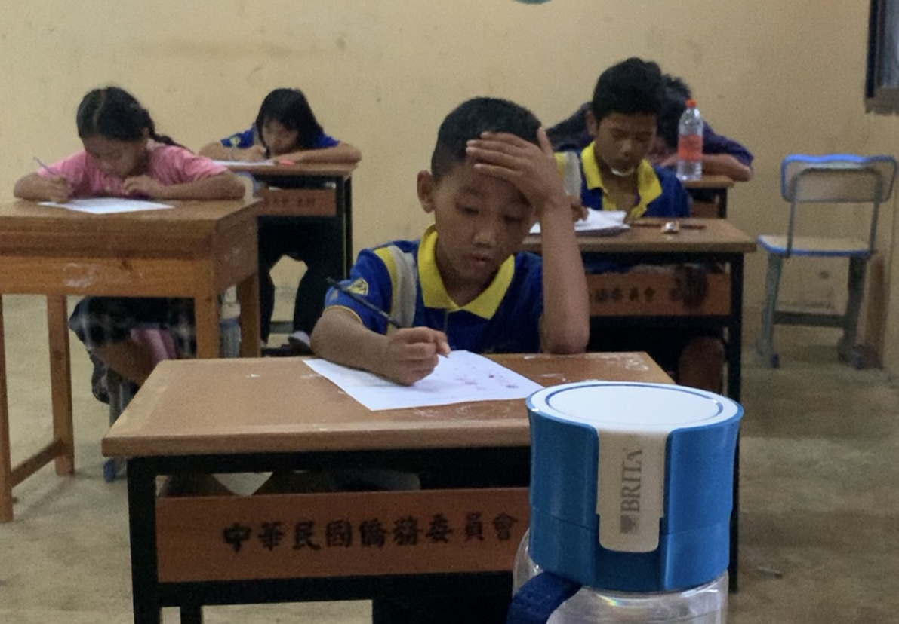

🧠 專案動機與教學現場
本專案靈感來自我曾於泰北國小擔任志工教師的經驗。
當時觀察到學生常因語言隔閡、害羞，或教師準備不足而缺乏有效互動。
為了幫助未受訓的志工教師在出發前就能模擬練習，我設計這套整合 AI 的教學模擬器。


🧩 功能模組介紹
🗣️ 語音輸入模組
結合瀏覽器語音辨識 API，自然捕捉教師語句進入互動流程。
🎭 學生反應模擬
透過圖片切換模擬學生理解、困惑與驚訝的整體表情反應。
📋 教學建議與語氣分析
根據語句特徵與語氣關鍵詞提供基本教學建議，未來可整合 LLM。
🌱 期待發展方向
🧠 MediaPipe 表情
💬 教學語氣建議
📈 教師語速分析
上述功能目前尚未實作，預計作為後續擴充方向，讓模擬器更具 AI 智能與實用價值。
🧠 表情自動分析（MediaPipe）：透過整合 MediaPipe 臉部特徵點偵測模組，將可即時讀取學生表情狀態，替代圖片模擬，提升互動真實性與反饋即時性。
💬 LLM 智能教學語句回應：預計導入大型語言模型（如 ChatGPT 或 Gemma），提供語意理解與語氣建議回饋，強化語言表達與教學策略精煉。
📈 語調語速統計與教師成長分析：記錄每次語音輸入的長度、語速與鼓勵型用詞比例，建立教師成長曲線，支援自我教學反思與成效評估。
🎬 模擬器展示區
本模擬器為「語音輸入 × 學生反應模擬 × 教學建議分析」的整合展示版本，透過說一句話，即可體驗整體互動流程。
🔧 使用說明：
- Step 1：點下方開始語音按鈕，對畫面說出一段教學語句
- Step 2：觀察畫面中學生模擬圖像隨之切換（表情變化）
- Step 3：下方即時顯示 AI 回饋語氣建議與語句分析

💬 請對畫面說一句教學語句，系統將自動模擬學生反應並給予語氣建議。